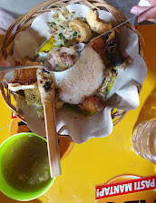
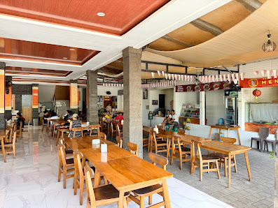

Kuliner Legendaris Bali
Sate Babi Bawah Pohon
Sate babi bakar arang dengan daging empuk, bumbu manis gurih meresap, dan taburan cabai rawit segar khas Legian.
Pesan via WhatsApp
Warisan Rasa Since Legian
Cerita Kami
Sate Babi Bawah Pohon bermula dari warung tenda sederhana di bawah rindangnya pohon daerah Legian, Bali. Seiring berjalannya waktu, cita rasa sate babi panggang arang kami menjadi ikon kuliner wajib bagi pengunjung dari seluruh penjuru Indonesia hingga mancanegara.
Kami mempertahankan kualitas bahan baku, irisan daging empuk berukuran mantap, serta marinasi bumbu rempah khas Bali yang dipanggang segar setiap harinya.
Jelajahi Menu